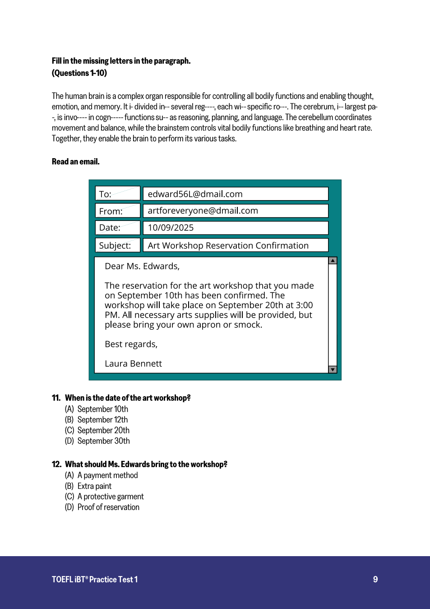
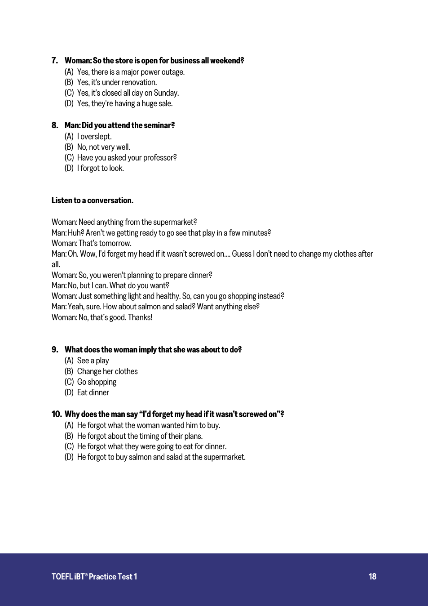
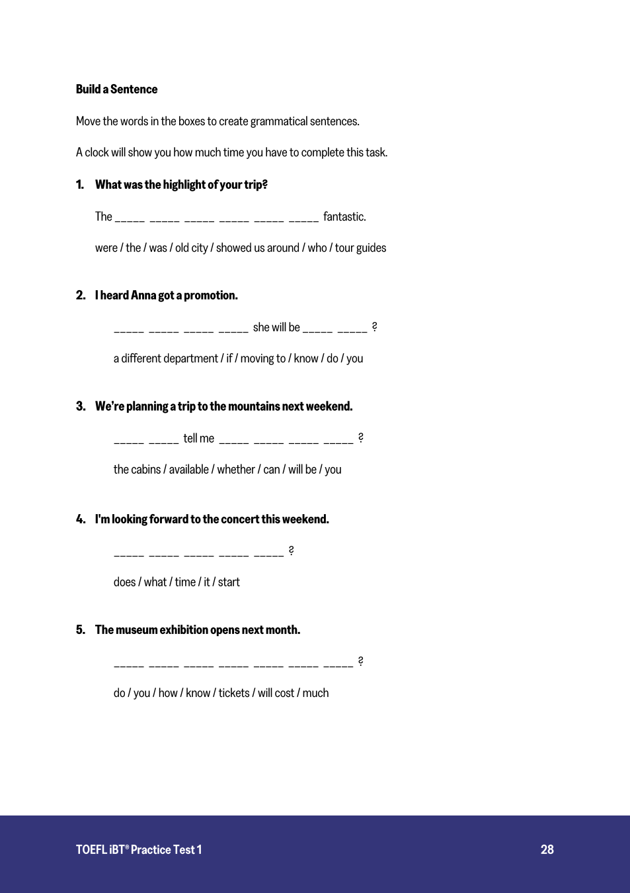
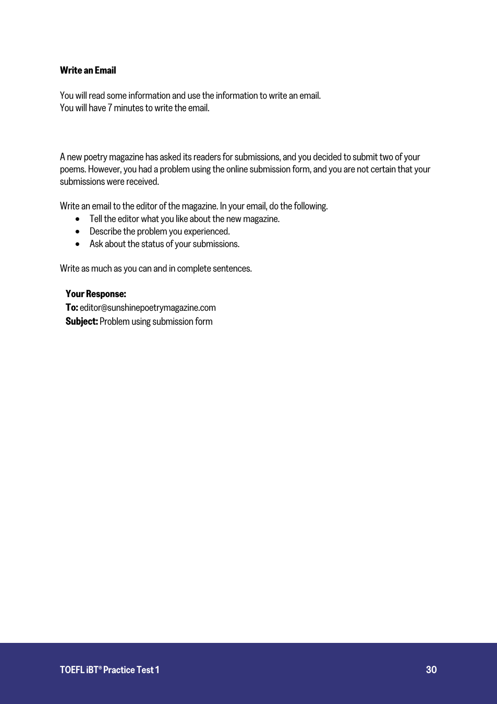
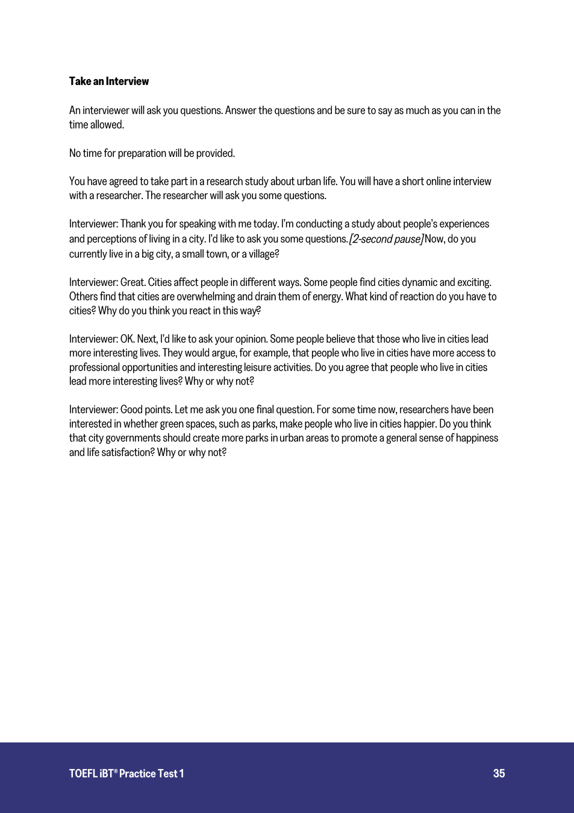

你的托福学习 · 从实际作答出发
今天，先把一小组题做明白。
先独立试，再一起找原因。每次解决一个问题，下一组用新材料检查。
01 了解现在从四科短任务开始02 学会方法有困难时补课03 独立运用用另一组题检查
先听一段生活对话
听完回答两题，看看你能否跟上人物的计划变化。没有字幕；提交后再一起回到卡住的地方。
首做约 5 分钟 · 复盘可延伸
02
换一个科目试试
阅读定位信息 · 口语采访 · 写一封邮件
03
想先学方法，也可以
老师课程和讲义随时可看，再回到原题练习。
先独立试，再一起找原因。每次解决一个问题，下一组用新材料检查。
听完回答两题，看看你能否跟上人物的计划变化。没有字幕；提交后再一起回到卡住的地方。
阅读定位信息 · 口语采访 · 写一封邮件
老师课程和讲义随时可看，再回到原题练习。




